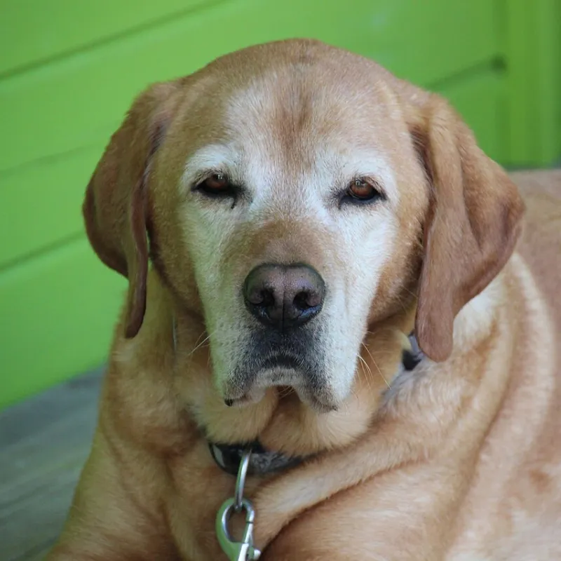
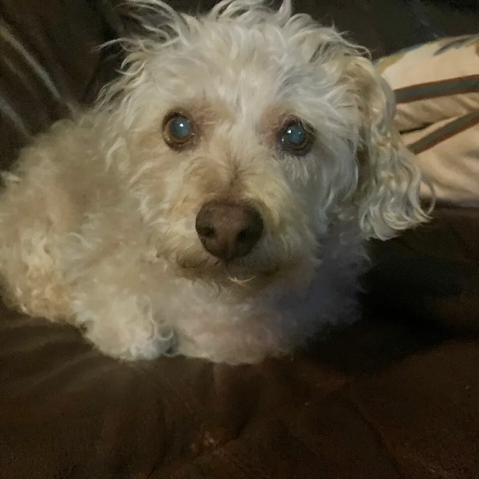
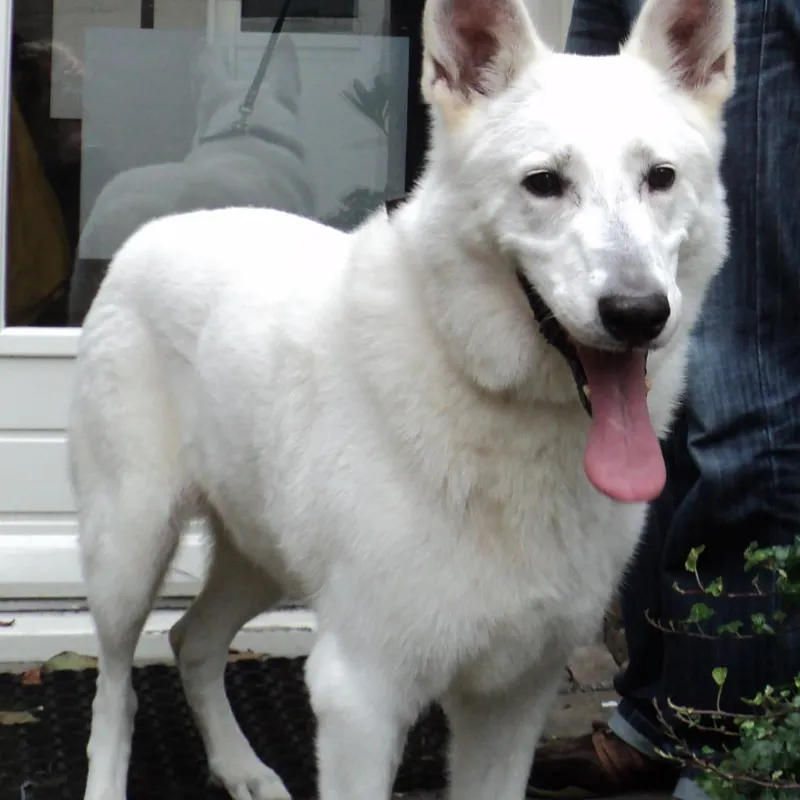
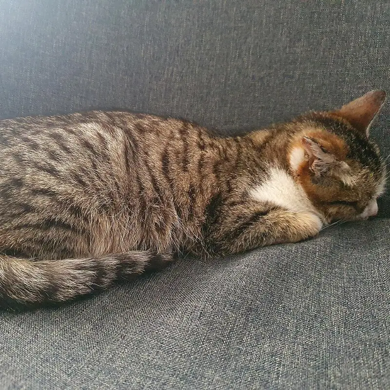
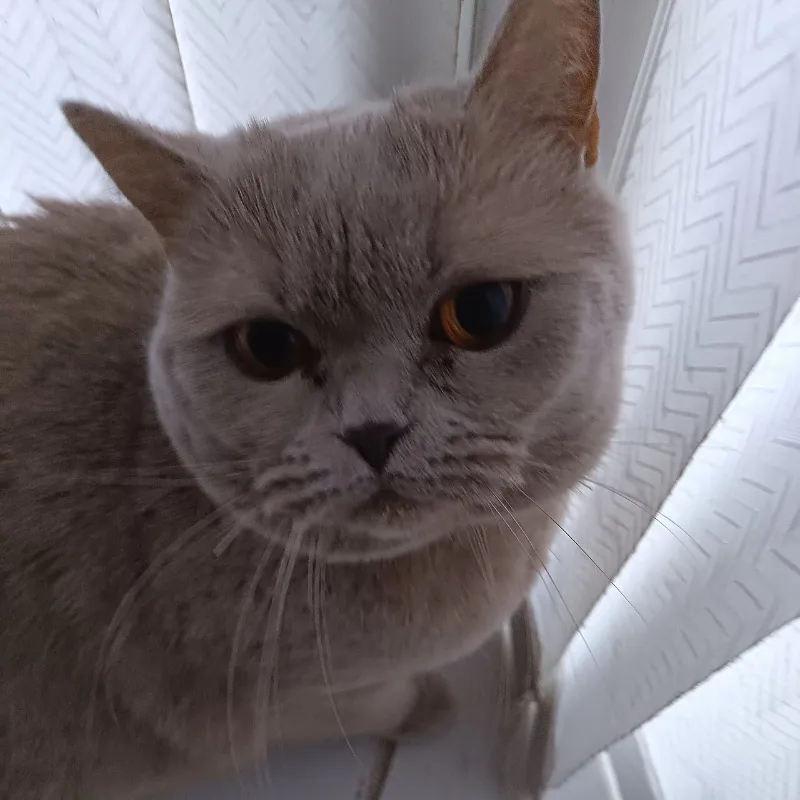
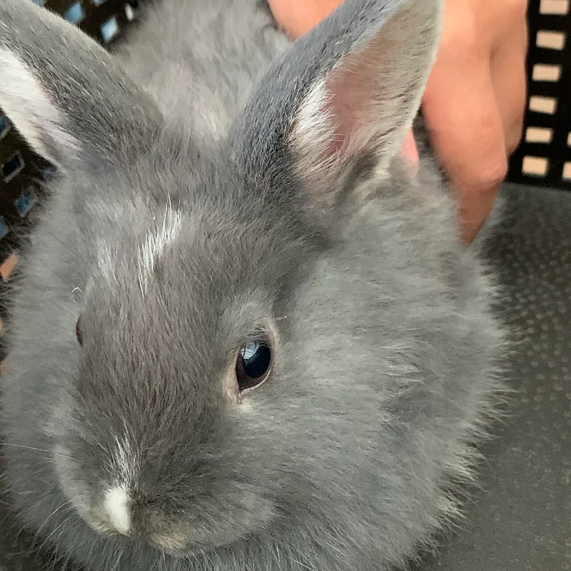

입소 상담
더 이상 돌보기 어렵거나 구조한 동물이 있다면 보호 가능 여부와 다른 방법을 함께 찾습니다.
센터 소개
숲결은 2016년 작은 임시 보호소로 시작했습니다. 구조된 동물이 치료와 회복을 거쳐 사람과 다시 마음을 나눌 수 있을 때까지, 서두르지 않고 한 마리씩 곁을 지킵니다.
보호 기간에 제한을 두지 않고, 모든 입양은 상담과 방문을 거쳐 신중하게 연결합니다.
2026년 9월 기준
가치
보호 기간과 관계없이 모든 동물이 새 가족을 만날 때까지 돌봅니다.
상담, 방문, 적응 기간을 거쳐 서로에게 맞는 가족을 연결합니다.
후원금 사용 내역과 보호 현황을 매달 공개합니다.
서비스
더 이상 돌보기 어렵거나 구조한 동물이 있다면 보호 가능 여부와 다른 방법을 함께 찾습니다.
보호 동물 소개부터 상담, 입양 후 적응까지 단계별로 돕습니다.
주민 제보와 지자체 요청을 받아 다치거나 위험에 처한 동물을 구조합니다.
보호 중인 동물 정보를 공유하고 실종 신고와 대조해 보호자를 찾습니다.
치료 중이거나 어린 동물을 가정에서 돌봐 줄 임시 보호 가정을 연결합니다.
새 가족을 기다리는

느긋한 성격으로 사람 곁에 기대어 쉬는 걸 좋아해요. 조용한 가정을 기다려요.

곱슬곱슬한 털에 겁이 조금 많지만 금방 마음을 열어요.

산책을 좋아하는 활발한 대형견이에요. 함께 많이 걸어 줄 가족을 기다려요.

햇볕 드는 자리에서 낮잠 자는 걸 제일 좋아해요.

처음엔 조심스럽지만 익숙해지면 먼저 다가와 머리를 비벼요.

건초를 좋아하고 조용한 환경에서 편안해해요.
입양 안내
관심 있는 동물을 골라 입양 신청서를 작성합니다.
생활 환경과 가족 구성을 듣고 동물과 잘 맞는지 함께 살펴봅니다.
센터에서 동물을 직접 만납니다. 필요하면 여러 번 방문해도 괜찮아요.
입양 조건을 확인하고 계약서를 작성한 뒤 함께 집으로 갑니다.
입양 후 3개월 동안 적응 상황을 확인하고 필요한 도움을 드립니다.